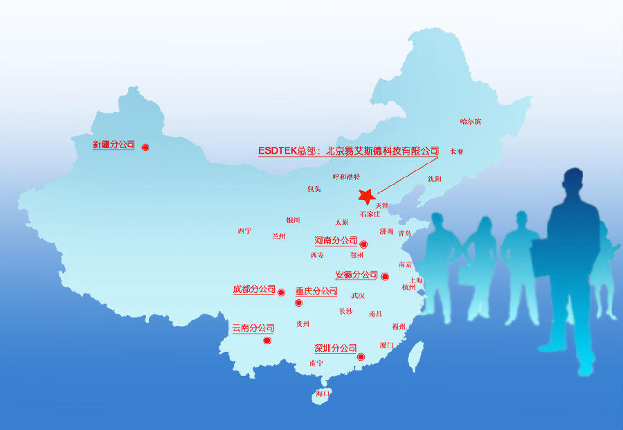

北京易艾斯德科技有限公司(ESDTEK)成立于2000年，致力于为用户提供能效管理、安全运营、专家服务等整体解决方案。
ESDTEK始终不渝的坚持技术创新。公司与国内外多家科研机构和知名企业开展合作，建立专家团队，取得多项重大创新成果，并广泛应用于电力自动化市场,先后被认定为北京市高新技术企业、软件企业、年度优秀企业、“专利引擎”试点企业和知识产权保护体系建设项目试点企业等。目前已获得几十项国家专利和软件著作权，研发完成多项重大科研项目和课题。
ESDTEK始终不懈的追求卓越品质。 公司通过了ISO9001质量管理体系认证、ISO14001环境管理体系认证、OHSAS18001职业健康安全管理体系认证。公司关注员工职业健康安全，注重环境保护，严格遵循国际、国家、行业标准，所有产品均通过权威检测机构认证和鉴定，为用户提供高品质的产品和服务。
ESDTEK始终用心的提供专业服务。 公司放眼未来，建立了优秀的专家服务团队，为客户提供智囊化、多元化、系统化、规范化、国际化的专业服务。公司凭借完善的服务，精湛的技术和安全的施工，赢得了广大客户的信赖。
ESDTEK始终如一的建设营销网络。 公司总部位于北京中关村科技园区，在深圳、成都、重庆、安徽、云南、河南、新疆、无锡等地设立分公司，并在上海、天津、济南、青岛、西安、太原、郑州、武汉、南昌、厦门、石家庄、包头、银川、兰州、沈阳等地设有分支机构，营销网络遍布全国。公司产品广泛应用于公共事业、智能建筑、轨道交通、航空航天、石油石化、电力企业、印钞造币、信息产业、工业制造等诸多领域。
ESDTEK始终以先进的管理理念为支撑, 不断深入品质管理和服务理念，并将“品质·服务”这一企业核心价值融入经营发展的每个方面。畅想绿色能源的美好未来，ESDTEK正为其高效、用心地工作。
重要声明
近期，一些不法厂家擅自仿冒我公司产品，并进行虚假宣传。现我公司郑重声明：从未授权任何企业通过网络途径发布招商、销售信息，并且对上述假冒行为造成的损失不承担任何责任。请广大用户和合作企业在选购产品和服务时辨别真伪，以免上当受骗。
品质是公司发展的基石。易艾斯德行为准则以“创造品质”作为指导，为易艾斯德发展的宗旨，致力于打造一个值得信赖的企业。目前易艾斯德已经获得众多奖项和荣誉，涉及到企业产品、服务、诚信、品牌等方方面面